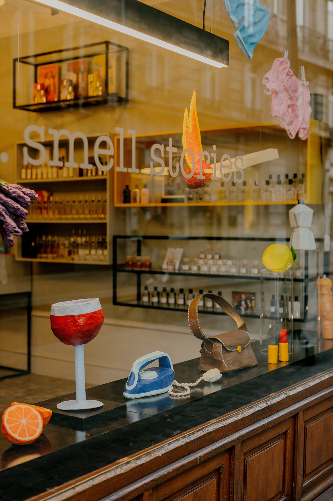
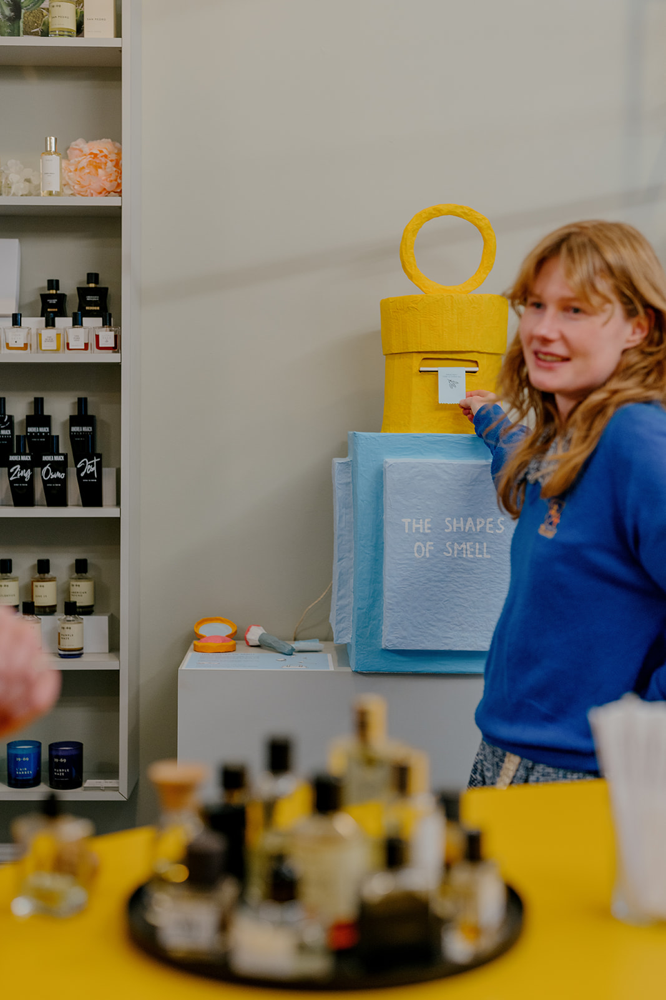
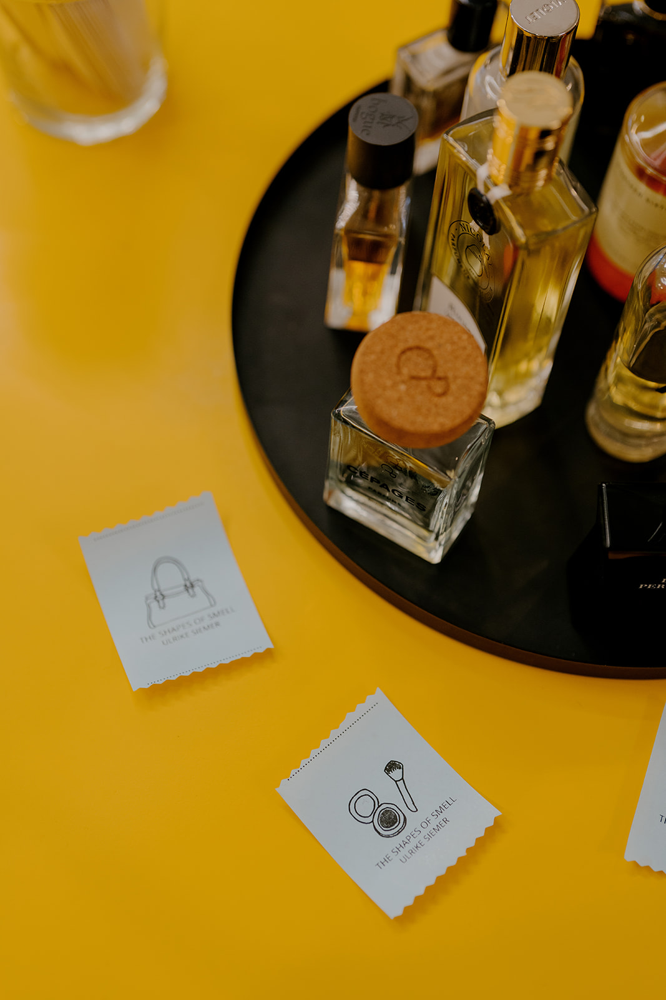

The shapes of smell
window display design, 2025
window display design, 2025






E-mail: siemerulrike@gmail.com
Phone: +32 476 83 25 76
Instagram: @ulrikesie
Lives and works in Brussels.
Ulrike creates sculptures and objects in papier-mâché, often used in scenography, window displays, and decor for films or photoshoots. Her work combines playful forms, vibrant colors, and everyday details, exploring how objects can be touched, worn, or used in different contexts.